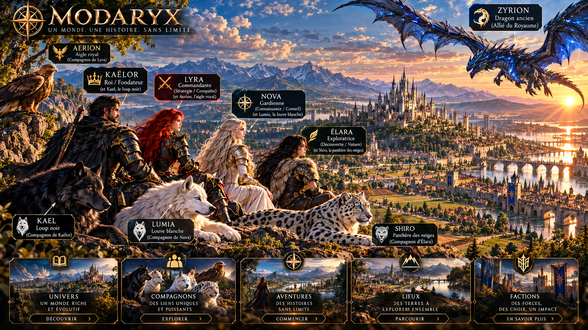

Suivre
Découvrir les nouvelles étapes du Royaume, ses personnages, ses lieux et les grandes évolutions de l’univers.

Le Royaume se construit ensemble
MODARYX existe aussi par celles et ceux qui suivent son évolution, partagent ses histoires, imaginent ses terres et font vivre son univers.
La communauté doit prolonger l’univers sans casser son immersion. Ici, on entre par le Royaume, ses personnages, ses créations et les échanges qui les font grandir.
Découvrir les nouvelles étapes du Royaume, ses personnages, ses lieux et les grandes évolutions de l’univers.
Faire circuler des idées, des créations, des interprétations et des récits qui respectent l’identité MODARYX.
Contribuer à une culture commune autour du monde sans transformer l’expérience en simple tableau technique.
Le Royaume grandit lorsqu’il devient un monde partagé.